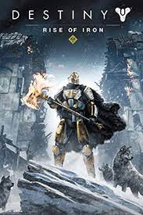
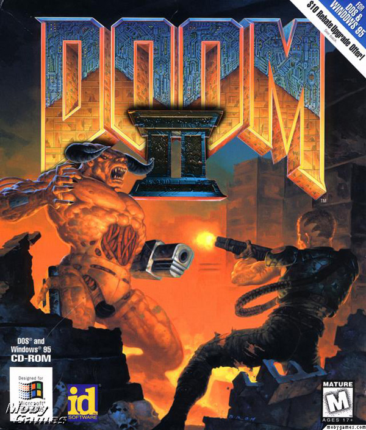

Fortnite
Save the World is a player-versus-environment cooperative game, with four players collaborating towards a common objective on various missions. The game is set after a fluke storm appears across Earth, causing 98% of the population to disappear, and the survivors to be attacked by zombie-like "husks".

